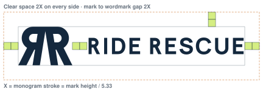

Ride Rescue · Stage 3 · Construction, clear space, minimum size, misuse
One unit, X, drives the whole system: X is the monogram's stroke, 12 units at a 64-unit mark height. Mark-to-wordmark gap is 2X in the horizontal lockup and 1.5X in the stacked one. Clear space is 2X on every side.

| Asset | Digital minimum | Print minimum |
|---|---|---|
| Horizontal lockup | 180 px wide | 45 mm wide |
| Stacked lockup | 100 px wide | 25 mm wide |
| RR monogram, master | 32 px tall | 8 mm tall |
| RR monogram, small-size cut | 16–31 px | 5–8 mm (embroidery: 10 mm) |
| Wordmark alone | 100 px wide | 25 mm wide |
The horizontal lockup's minimum is set by its monogram reaching 32 px. Below 180 px wide, use the stacked lockup or the small-size monogram.
The master's road closes up below 24 px. The small-size cut uses a thinner stroke (10.5), taller bowls (40) and a wider road (26 at the baseline) so the idea survives at 16 px. Use it only below 32 px, never as a replacement for the master.